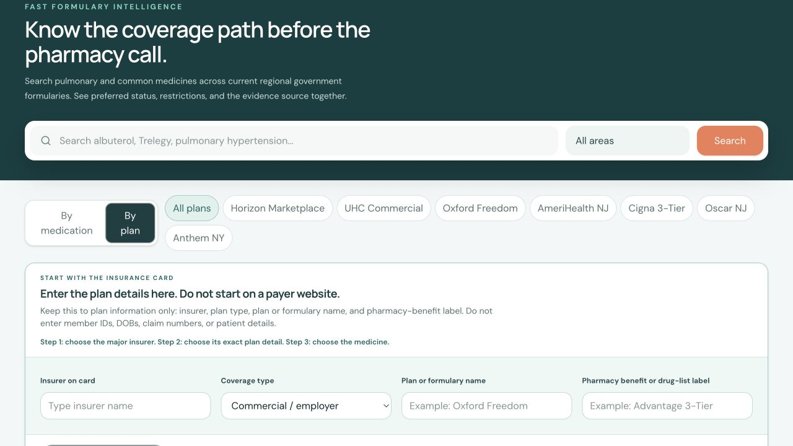

01
Choose the insurer
Search the NJ insurer directory or select a major payer route.
Formulary Finder brings payer, plan, product, and medication context into one focused workspace, so physicians, nurses, and pharmacy teams can move faster with confidence.
Built for fast, PHI-free plan and medication research.

Stop switching between payer pages, PDF lists, and disconnected plan details. Formulary Finder guides each choice, keeps the context visible, and surfaces the next useful action.
“Find the plan. Find the product. Find the next step.”
A workflow designed around how clinic teams actually move.Smart narrowing and autocomplete keep the experience quick, familiar, and easy to teach across a clinic.
Search the NJ insurer directory or select a major payer route.
Commercial, Medicare, Marketplace, or Medicaid filters the next options.
Use autocomplete and exact plan or product identifiers where available.
Choose the suggested product, then review tier and published restrictions.
When prior authorization is flagged, the result card puts the next move right beside the medication details. Download the official PA form immediately when the selected plan provides a downloadable form, or open that payer’s official PA route in one click.
That means less searching, fewer wrong forms, and a faster handoff from clinical decision to administrative action.
The action shown follows the selected plan’s published workflow.
Current public formularies and payer feeds are organized into practical in-portal workflows, with a foundation that can expand as your organization’s needs grow.
Exact NJ Medicare Advantage and standalone Part D plan context before medication results.
UHC NJ Marketplace product and plan identifiers stay inside the portal.
Aetna, UHC Community, Wellpoint, Fidelis, and Horizon NJ Health paths use payer-published sources where validated.
Horizon, AmeriHealth, UHC/Oxford, Cigna, and other public formulary baselines are separated by plan family. A generic carrier match never substitutes for the member’s exact pharmacy benefit.
Additional clinics and specialties can add validated payer sources without changing the core workflow.
Start with the insurer and medication combinations your team sees most. A supervised, PHI-free 60-day design-partner proof gives you a measured path from demo to daily use.
Credited toward annual conversion for one New Jersey clinic.
One location, no per-staff fees, and a plan pack shaped around actual clinic demand.
For groups sharing one payer configuration across as many as five locations.
Launch pricing hypothesis. Unsupported sources are added only after feasibility review; custom licensing, integrations, and unusual maintenance are scoped separately.
Bring your top 10–20 insurers or plan families and the medications that create the most work.
Use de-identified examples to test exact plan selection, product matching, and next steps.
Review time-to-answer, corrections, unconfirmed results, and the next highest-value connector.
The result is easy to read, easy to explain, and easy to carry into the next step with a patient, pharmacist, or payer team.
Results reflect the identified source and plan context. They are not an eligibility, cost, payment, or approval determination.
If the exact benefit is not available, the portal says so and points staff to the next confirmation step.
Strength, dosage form, device, and product identifier can change the result. Suggested options help staff choose the right one.
The initial workflow is built around plan and medication information, not patient names or member IDs.